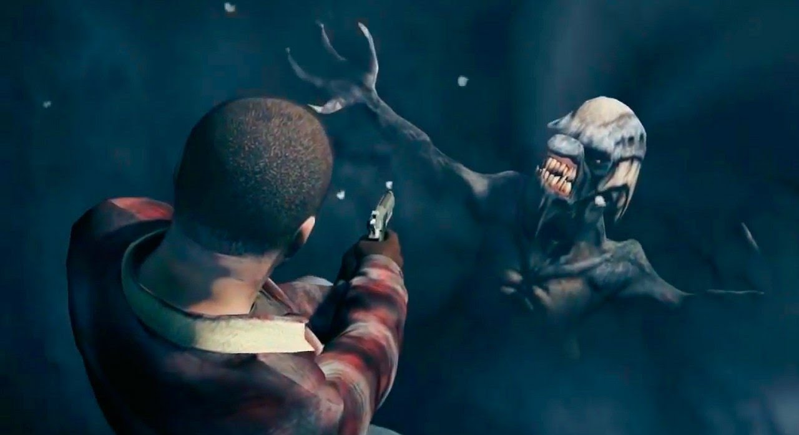

1. Инопланетянин во льду
Когда игрок начинает однопользовательскую кампанию GTA V, в прологе он становится участником ограбления банка. Совершив преступление, главный герой сразу начинает убегать от полицейских. Все происходит настолько быстро, что у нас практически нет свободного времени, чтобы ознакомиться с красотами небольшого городка в штате Северный Янктон, который доступен только в ограниченные моменты игры. По этой причине многие упускают главное свидетельство присутствия инопланетных гостей во вселенной Grand Theft Auto – замороженного инопланетянина в водоеме. Чтобы увидеть пришельца, вам нужно осмотреть замерзшую реку, протекающую с правой стороны от главного героя сразу после того, как он прыгнет в автомобиль для бегства от полицейских. Когда вы доберетесь до железнодорожных рельс, обогните возвышенность справа и следуйте вдоль реки по течению до самого моста. Там во льду находится инопланетянин.